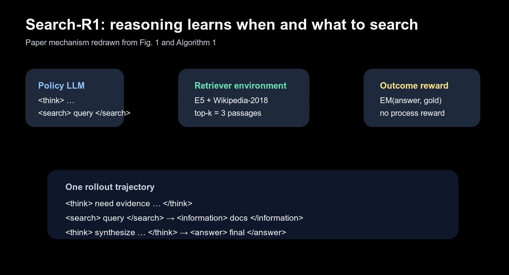
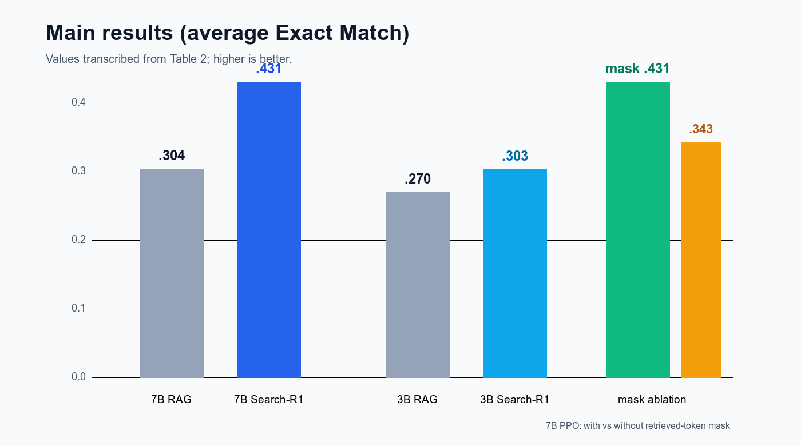
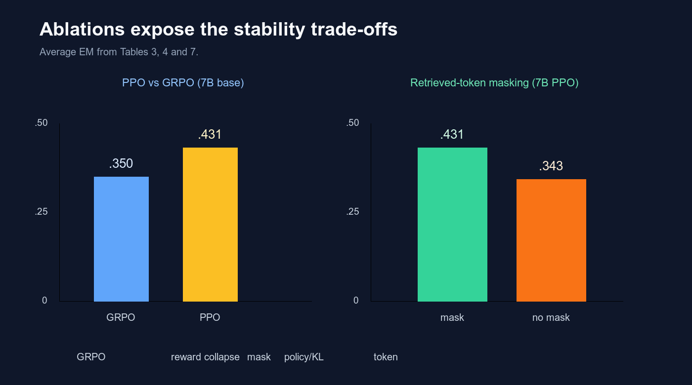
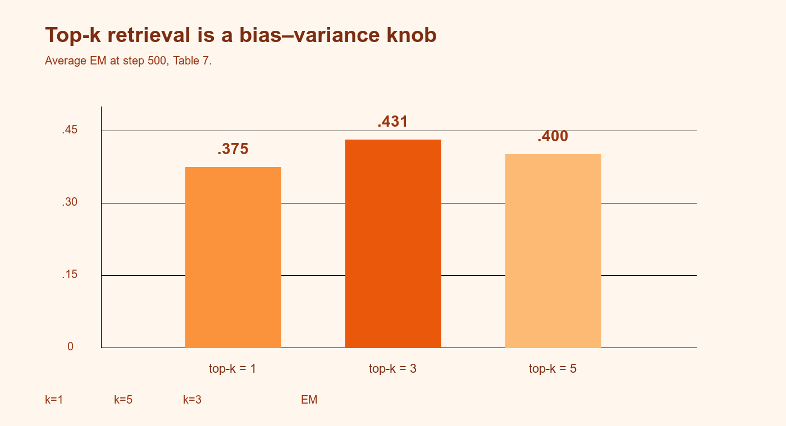

Search-R1：用强化学习教 LLM 在推理中主动搜索

一句话
让 LLM 在回答问题的过程中自己学会调用搜索，而不是由固定 RAG 管线替它决定查询。
训练信号
只用规则化最终答案 EM；没有过程奖励，也没有神经 reward model。
关键稳定化
把 <information> 中的检索 token 从 policy loss 与 KL 中屏蔽掉。
实验结论
7B base 平均 EM 0.431，mask 去掉后降到 0.343；PPO 更稳，GRPO 更快但长训会 collapse。
1. 出发点：RAG 把查询写死了
固定 RAG 的流程是“问题 → 一次检索 → 拼接文档 → 回答”。它把最关键的决策提前写死：什么时候需要外部知识、查询应该怎样改写、拿到第一批证据后是否还要追问。IRCoT、ReAct 这类方法把多轮搜索交给提示词或人工轨迹，模型在训练时却没有因“搜索策略好”而获得直接反馈。
Search-R1 的问题定义更接近一个带工具的 MDP：策略既产生自然语言推理，也产生工具调用；搜索引擎是环境，返回的文档是 observation；最终正确答案给出稀疏但可自动计算的奖励。这样做的价值在于，查询策略和答案推理共享同一条 RL 轨迹。
术语速查
RAG
先检索文档，再把文档塞进上下文生成答案。
Rollout
策略从问题开始生成一整条“思考—搜索—读文档—回答”轨迹。
PPO
带 critic 的策略梯度方法，用 clipped ratio 限制单步更新幅度。
GRPO
对同一问题采样一组答案，用组内相对得分替代 value critic。
Retrieved token
搜索引擎插入的文档 token；它们不是策略生成的动作。
EM
Exact Match：抽取最终答案后与标准答案做规则匹配。
全局路线图
① 生成动作
模型在 <think> 中推理，决定输出 <search>query</search> 还是 <answer>…</answer>。
② 查询环境
E5 检索器在 Wikipedia-2018 上取 top-3 passages，并包装成 <information>。
③ 继续推理
检索内容回到上下文，模型可以再次搜索，最多 4 个 action turn。
④ 计算奖励
只看最终答案是否正确，再用 PPO 或 GRPO 更新策略。
2. 方法：把搜索塞进 RL 轨迹
2.1 目标函数：策略分布现在条件于搜索环境
论文把经典 RLHF/R1 目标扩展为：
—— 翻译：模型要在“答对”与“别偏离参考模型太远”之间平衡；关键是轨迹 $y$ 已经包含模型 token 和检索返回的文档 token。
把它想成带外接计算器的考试：学生不仅写答案，还可以按按钮查资料。按钮后的资料不是学生写出来的，训练时不能把“资料本身”当成学生该模仿的动作；真正要学的是什么时候按按钮、按什么查询、读完后如何继续。
2.2 Retrieved-token loss masking：只训练模型写的部分
设 \(I(y_t)=1\) 表示第 \(t\) 个 token 是 LLM 生成的，\(I(y_t)=0\) 表示它来自检索。PPO 的 token 目标写成：
—— 翻译：分母只数模型自己生成的 token；检索文档在序列里可见，但不会因为内容好坏被 policy gradient 直接更新。
这个细节解释了为什么“把搜索结果直接拼进 response”会出问题：如果不屏蔽，梯度会把外部文档当成策略输出，模型可能学到复制检索文本的奇怪偏好。GRPO 使用组内相对优势替代 \(A_t\)，但同样屏蔽 retrieved token，并且在 KL 项中也使用 mask。
repo/search_r1/llm_agent/generation.py:L1320–L1336 — 官方源码中的 retrieved-information mask（官方仓库同路径）
def _info_masked_concatenate_with_padding(
self, prompt, prompt_with_mask, response, info=None, pad_to_left=True
):
pad_id = self.tokenizer.pad_token_id
tensors = [prompt, response]
tensors_with_mask = [prompt_with_mask, response]
if info is not None:
tensors.append(info)
info_mask = torch.full(info.size(), pad_id,
dtype=info.dtype, device=info.device)
tensors_with_mask.append(info_mask)
concatenated = torch.cat(tensors, dim=1)
concatenated_with_info = torch.cat(tensors_with_mask, dim=1)
mask = concatenated != pad_id if pad_to_left else concatenated == pad_id
sorted_indices = mask.to(torch.int64).argsort(dim=1, stable=True)
return (concatenated.gather(1, sorted_indices),
concatenated_with_info.gather(1, sorted_indices))
代码里的 info_mask 用 pad id 占位，后续由 info_mask 生成 final_output['info_mask']。这比“算完 loss 再乘一个布尔矩阵”更早地把信息块标记出来，避免 padding、position id 与 loss mask 错位。
2.3 多轮 rollout：搜索是一个可重复 action
Algorithm 1 的循环只有三个分支：检测到 </search> 就检索并追加 observation；检测到 </answer> 就结束；其他非法格式则返回“重新思考”的提示。动作预算 \(B\) 在实验中设为 4。
repo/search_r1/llm_agent/generation.py:L1705–L1769 — `execute_predictions` 的搜索/回答/非法动作分支
cur_actions, contents = self.postprocess_predictions(predictions)
search_queries = [c for a, c in zip(cur_actions, contents) if a == "search"]
if do_search:
search_results = self.batch_search(search_queries)
for action, active in zip(cur_actions, active_mask):
if action == "answer":
next_obs.append(""); dones.append(1)
valid_action.append(1); is_search.append(0)
elif action == "search":
next_obs.append(
f"\n\n<information>{search_results.pop(0).strip()}</information>\n\n"
)
dones.append(0); valid_action.append(1); is_search.append(1)
else:
next_obs.append("\nMy previous action is invalid... Let me try again.\n")
dones.append(0); valid_action.append(0); is_search.append(0)
这里有两个容易被忽略的实现选择：第一，多个样本的 query 会先 batch 后再发给检索服务；第二，非法动作不会直接丢弃轨迹，而是给模型一次“修复格式”的机会。这使格式错误变成可学习的 exploration cost，而不是 silent failure。
repo/search_r1/llm_agent/generation.py:L1790–L1817 — 从自由文本解析 `
for prediction in predictions:
if isinstance(prediction, str):
pattern = r"<(search|answer)>(.*?)</\1>"
match = re.search(pattern, prediction, re.DOTALL)
if match:
content = match.group(2).strip()
action = match.group(1)
else:
content = ""
action = None
actions.append(action)
contents.append(content)
这段正则也揭示了方法的边界：它只识别两个 action 名称，查询计划、引用质量、搜索结果可信度都没有独立的结构化状态。
2.4 检索服务与奖励：轻量接口，稀疏反馈
repo/search_r1/search/retrieval_server.py:L1495–L1501 — 官方 FastAPI `/retrieve` 端点（仓库快照）
@app.post("/retrieve")
def retrieve(request: RetrieveRequest):
queries = request.queries
topk = request.topk
results = search_engine.batch_search(queries, topk=topk)
return {"result": results}
训练配置把服务地址、top-k、turn 数和 state masking 显式写在脚本里：
repo/train_grpo.sh:L414–L422 — GRPO 运行配置中的关键超参
algorithm.adv_estimator=grpo
actor_rollout_ref.actor.optim.lr=1e-6
actor_rollout_ref.rollout.n_agent=5
actor_rollout_ref.actor.state_masking=true
actor_rollout_ref.rollout.max_turns=2
actor_rollout_ref.rollout.search_url=http://localhost:8000/retrieve
actor_rollout_ref.rollout.topk=3
论文的奖励函数是最小化设计：
它没有 format reward，也没有 neural reward model。好处是成本低、目标清楚；代价是所有中间行为都要靠最终答案的 credit assignment 间接学到。
3. 结果：收益来自“学会搜索”，而非只会生成更长答案
3.1 主结果

实验统一使用 Qwen2.5-3B/7B 的 base 与 instruct 版本、Wikipedia-2018、E5 retriever、top-3 passages；训练集把 NQ 与 HotpotQA 合并，测试七个 QA 数据集，指标是 EM。对 7B base，逐数据集结果为：
| 方法 | NQ | TriviaQA | PopQA | HotpotQA | 2Wiki | Musique | Bamboogle | Avg. |
|---|---|---|---|---|---|---|---|---|
| RAG | 0.349 | 0.585 | 0.392 | 0.299 | 0.235 | 0.058 | 0.208 | 0.304 |
| Rejection Sampling | 0.360 | 0.592 | 0.380 | 0.331 | 0.296 | 0.123 | 0.355 | 0.348 |
| Search-R1-base | 0.480 | 0.638 | 0.457 | 0.433 | 0.382 | 0.196 | 0.432 | 0.431 |
| Search-R1-instruct | 0.393 | 0.610 | 0.397 | 0.370 | 0.414 | 0.146 | 0.368 | 0.385 |
从表格计算，7B base 相对 RAG 的提升是 \((0.431-0.304)/0.304\approx41.8\%\)；3B base 是 \((0.303-0.270)/0.270\approx12.2\%\)。论文摘要写成“7B 提升 24%、3B 提升 20%”，而引言又写成“41% 和 20%”。这不是舍入误差，读者应以表格和明确的比较口径为准：不同模型 variant 或不同版本日志可能被混用。
3.2 PPO 与 GRPO：快和稳不能同时拿满

GRPO 的优势是不用额外 value model，组内奖励能快速形成相对优势；它的风险是组大小、奖励稀疏和检索噪声叠加后容易塌缩。PPO 有 critic warm-up 的成本，但在本文设置里最终更可靠。值得注意的是，instruct 模型并没有稳定地胜过 base：7B 上 GRPO-instruct 0.396 高于 PPO-instruct 0.385，而 base 上 PPO 明显胜出；“更会遵循格式”主要体现在收敛速度，不等于最终上限更高。
3.3 top-k：检索更多不自动等于更好

这组结果把“检索器质量”和“策略学习”绑在了一起：top-k=5 在早期 reward 上升更快，但 500 steps 时不如 k=3。对一个会搜索的 agent，检索接口的 precision/recall 不是固定前处理指标，而是直接改变 RL 的奖励景观。
4. 实现细节：论文公式怎样落到工程
4.1 训练和 rollout 的可复现实验设定
| 项目 | 论文设置 | 作用 |
|---|---|---|
| Backbone | Qwen2.5-3B/7B base + instruct | 比较模型规模与 post-training 的影响 |
| Corpus / retriever | Wikipedia-2018 + E5 | 固定知识源，隔离 RL 算法差异 |
| Retrieval | top-k=3 | 主实验平衡召回与噪声 |
| Data | NQ + HotpotQA 训练；7 数据集评测 | 同时看 in-domain 与 out-of-domain |
| Rollout | 最多 4 个 action，response/observation 500 tokens | 控制工具调用成本 |
| RL | 默认 PPO；GRPO group size=5 | 对比 critic 与组相对优势 |
| 优化 | policy lr \(10^{-6}\)，value lr \(10^{-5}\)，500 steps | 小学习率配合 KL/clip 稳定更新 |
| 硬件 | 8×H100，FSDP + CPU offload，vLLM rollout | 支撑大 batch 与长序列 |
4.2 论文—代码对照
- 公式里的 \(I(y_t)\) 对应
responses_with_info_mask与最终info_mask，而不是一个独立的 reward 过滤器。它作用在 policy loss 和 KL 上。 - Algorithm 1 的“批量搜索” 对应
search_queries收集后一次调用batch_search；这减少 HTTP 往返，但也让一个 batch 内的请求共享检索服务吞吐瓶颈。 - 动作解析 是正则表达式，不是 constrained decoding。非法格式会得到文本提示后继续 rollout，因此训练轨迹可能包含无效 action。
- 服务接口 只接收
queries/topk/return_scores，检索器可以替换成 BM25、dense ANN 或在线 API；论文主实验只报告 E5 + Wikipedia-2018。 - 脚本参数 把
max_turns=2、topk=3、state_masking=true写死在运行命令中；这解释了论文表格与仓库默认配置为什么能一一对应。 - 奖励 是数据源对应的 QA EM 规则函数；它对“检索是否真的被使用”没有单独计分，所以“搜索次数上升”是结果驱动的副产物。
4.3 一个具体 rollout 例子
问题：“Teide National Park 和 Garajonay National Park 在哪里？”
- 第一步
<think>判断需要外部知识； <search>生成联合查询；- 环境返回包含 Garajonay 的 Wikipedia passage；
- 第二次
<think>把两个公园归到 Canary Islands； <answer>输出 “Canary Islands, Spain”。
这解释了论文案例中“单次搜索就能答对”与“需要根据前一条结果重写查询”两种模式。RL 没有被告知哪一种模式正确，只能从最终 EM 反推。
5. 批判与延伸
5.1 论文做得好的地方
- 把工具调用放进训练分布：搜索不是 inference-time prompt trick，而是 rollout 中的环境转移，训练与部署接口一致。
- masking 是真正的工程洞察：检索 token 参与上下文建模，却不参与策略梯度；0.431→0.343 的 ablation 说明它不是装饰。
- 奖励设计克制：EM 让实验可复现，也能直接检验“搜索行为是否帮助最终答案”。
- 分析维度完整：PPO/GRPO、base/instruct、响应长度、有效搜索数、top-k、group size 都有对照，而不是只报一个平均数。
5.2 具体不足
- 奖励太稀疏：EM 无法区分“证据充分但最后格式错”和“碰巧猜对”；模型可能学到投机性的短答案或不必要的搜索。
- 检索环境静态：Wikipedia-2018 与固定 E5 把“搜索能力”限制为单一语料和单一 retriever，不能代表实时网页、API 限速或坏结果。
- 动作空间受格式脆弱性影响：依赖正则解析
<search>/<answer>，标签缺失时只能追加一段英文纠错提示；这会把格式学习与事实推理纠缠在一起。 - turn budget 与 top-k 是手工常数：最多 4 actions、top-k=3 在本文成立，但不同问题难度需要不同预算；论文没有学习“何时停止搜索”的显式成本。
- 结果口径有矛盾：摘要/引言的 24%/41% 表述互相冲突，且与 Table 2 的直接相对提升不一致，降低了可复核性。
- 缺少成本指标：只报 EM，不报每题平均搜索次数、token 数、延迟、retriever QPS 或 GPU 小时；实际系统需要在准确率与调用成本之间做选择。
5.3 交叉验证：它与相邻工作的关系
| 工作 | 训练信号与工具调用 | 观察到的结论 | 与 Search-R1 的异同 |
|---|---|---|---|
| ReAct | 提示词交替 Thought/Action/Observation，无 RL | 少量示例就能触发搜索，但行为依赖 prompt 与任务先验 | Search-R1 保留相同轨迹结构，却把 action policy 用 outcome RL 学出来，减少人工轨迹依赖 |
| Toolformer | 用自监督筛选 API 调用，再做 SFT | 能学会插入 API call，但需要高质量的调用过滤与文本数据 | Search-R1 不需要标注调用轨迹，却承担更稀疏的 credit assignment；因此 masking 与 reward 设计更关键 |
| Self-RAG | 训练 retrieve / critique / generate 特殊 token，使用过程式反思信号 | 检索与批评 token 能改善 groundedness，但训练管线更复杂 | Search-R1 用单一 EM 换取简单性；它更像“让 RL 自己发现反思”，但可解释的过程监督更少 |
| DeepSeek-R1 | 只对参数化推理做 outcome RL | 仅凭结果奖励也能涌现长链推理与自验证 | Search-R1 把同一思路扩展到不可微检索环境；搜索结果是额外 observation，因此必须处理 retrieved-token credit assignment |
共同点是：结构化特殊 token 都能把“思考”和“工具调用”变成可观测的离散 action。分歧来自训练信号：ReAct/Toolformer 主要依赖示范或筛选，Self-RAG 引入过程 token，Search-R1 则押注最小 EM。结果上的差异很可能由此产生：过程监督越少，越需要更稳定的 RL（PPO、masking、KL）与更干净的检索环境来支撑探索。
5.4 研究启发：可以迁移的套路
把外部工具当环境
只要工具返回 observation、最终任务有可计算结果，就能把“调用时机”纳入策略学习，而不是写死在 orchestrator 里。
外部 token 要隔离梯度
上下文可见不等于动作可训练；对任何检索、数据库或浏览器返回内容，都应单独维护 token provenance mask。
先用稀疏结果奖励跑通
EM 不是最终答案，但能先验证工具接口、rollout 与 RL 稳定性，再逐步加入成本、证据和格式奖励。
反直觉点
更大的 top-k 与更快的 GRPO 收敛都可能带来更差的最终结果；搜索 agent 的有效信息量受噪声和训练稳定性共同约束。
6. 结论
Search-R1 的真正贡献是把“搜索”从一个固定 RAG 步骤改成了策略的一部分：模型自己决定要不要搜、搜什么、搜完是否继续搜。方法上最关键的不是复杂 reward，而是三个工程契约：检索结果回到 rollout、retrieved token 不参与 policy/KL 更新、最终答案用可复现的 EM 给出反馈。
在论文设置下，这个契约让 Qwen2.5-7B base 的平均 EM 从 RAG 的 0.304 提升到 0.431；但提升比例的文字表述存在 24%/41% 冲突，且真实部署还需要把延迟、调用次数、检索噪声和开放域 freshness 纳入目标。下一步最自然的实验是：在相同 rollout 框架里加入搜索成本和证据一致性奖励，同时报告 accuracy–latency–query 三维曲线。
来源与复现说明：论文内容来自 arXiv:2503.09516 的 HTML/PDF 文本；代码片段来自官方 Search-R1 仓库 的对应路径。当前工作区终端无法解析外网 DNS，因此
raw/paper.pdf未能缓存，图表均明确标注为依据论文重绘，代码目录保存了可核对的 load-bearing 片段快照。
讨论 / Comments
评论托管在本仓库的 GitHub Discussions, 需 GitHub 账号。